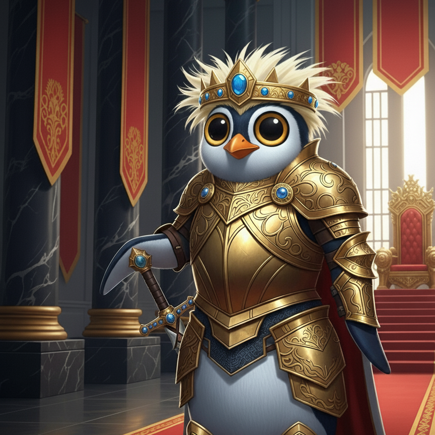
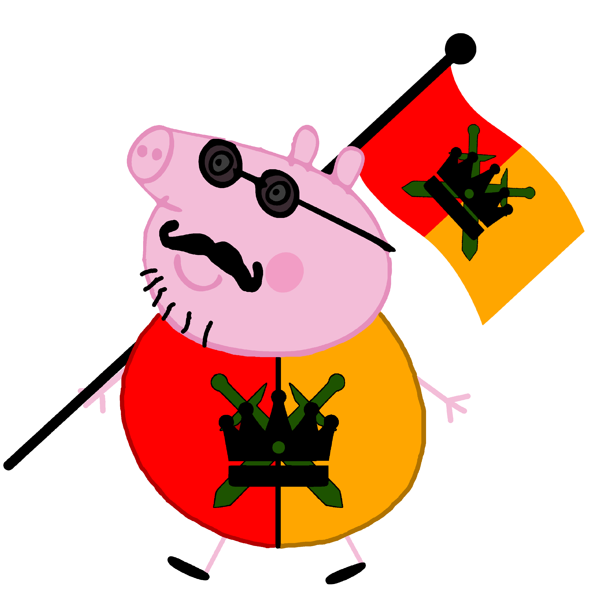
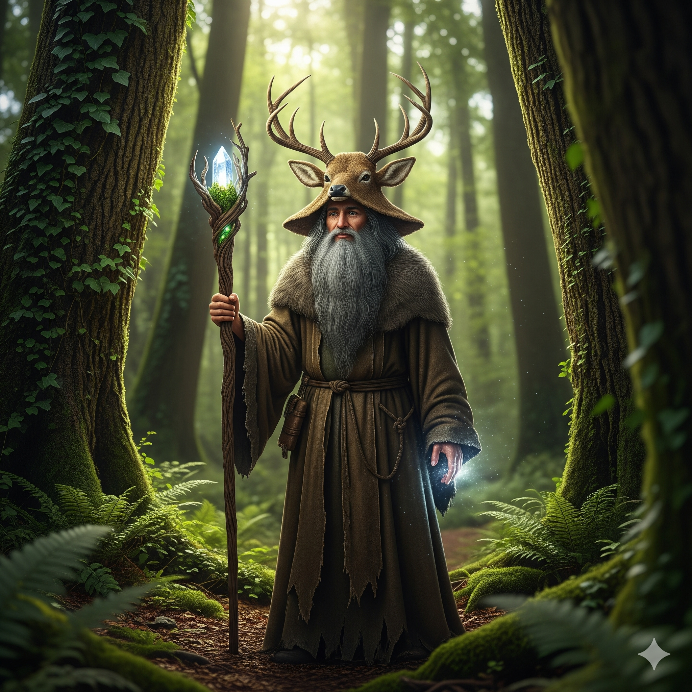
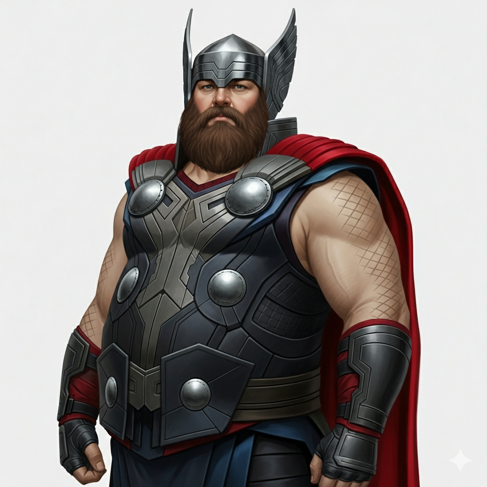
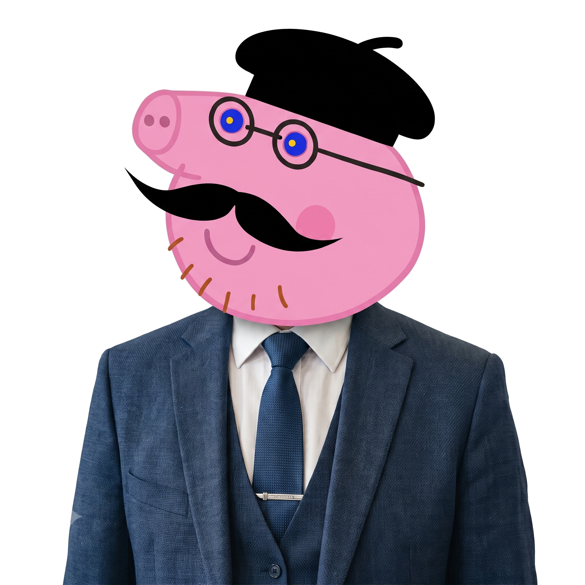
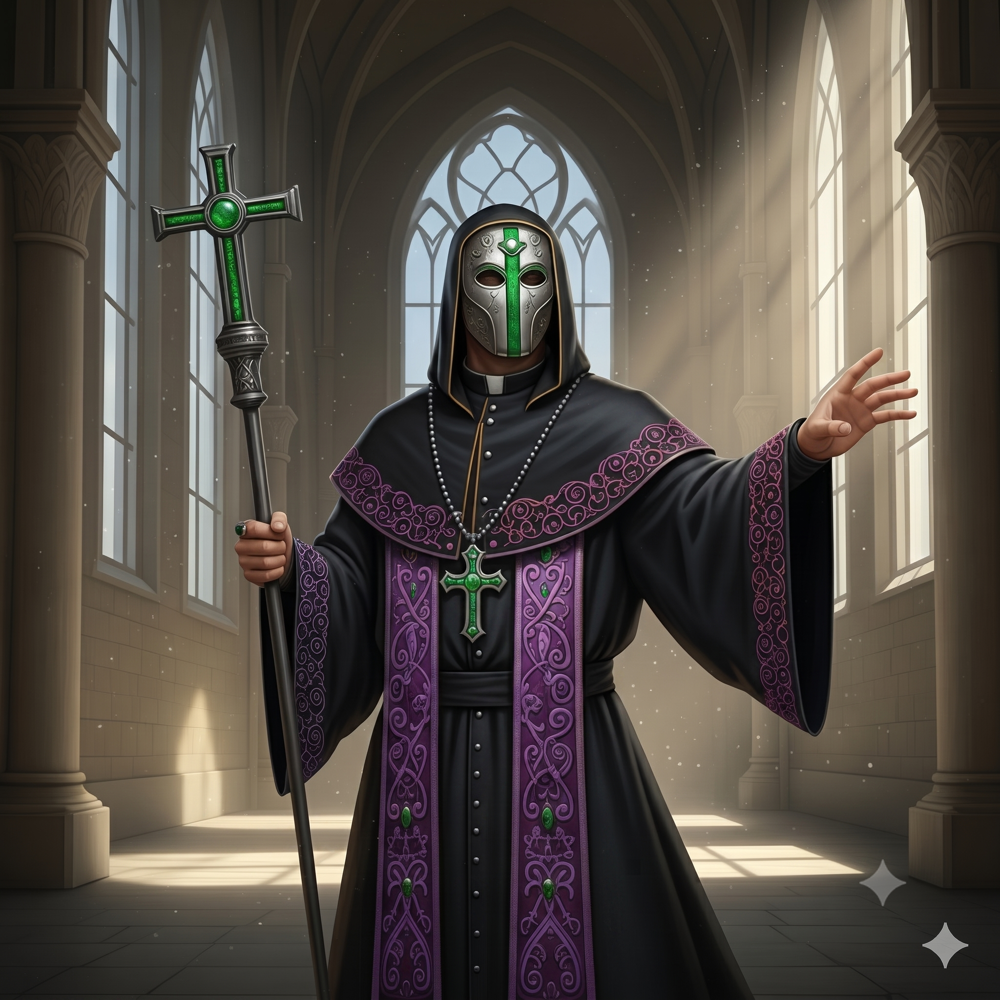

Senat Korony Krulestwa Multikont
Senat stanowi najwyższy federalny organ ustawodawczy i kontrolny, stojąc na straży tradycji, stabilności prawa oraz reprezentując zarówno wielonarodowe społeczeństwo Multikonian, jak i szlachetną arystokrację.
Rozkład Miejsc w Izbie Multikont
Działalność partii politycznych jest dozwolona.
100
Mandatów
Pierwszy Senator

Książe Tronu Bonifacy Gryfion
Pierwszy Senator
Prezydium Izby Multikont

Nacjonalistyczny Tata Świnka
Marszałek Izby Multikont

Decimus
Wicemarszałek Izby Multikont

Brodagast Bury
Wicemarszałek Izby Multikont

Thor Gruby
Wicemarszałek Izby Multikont
Prezydium Izby Arystokratów

Wielki Diuk Demokratyczny Tata Świnka
Marszałek Izby Arystokratów
Baron Ivor
Wicemarszałek Izby Arystokratów

Kardynał Mikar
Wicemarszałek Izby Arystokratów